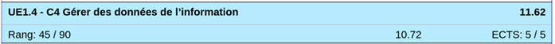
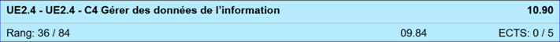
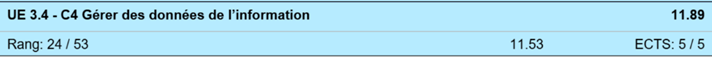
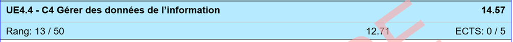

0Non Acquis3En
Cours6Acquis10
Analyse :
- Pour cette compétence, ce qui m’a plu ça a été le fait de découvrir un nouveau langage
de programmation en manipulant des données et de découvrir l’économie grâce au module
R1.09, car ceci est très intéressant en cours mais parce que ça peut nous être utile
pour la vie de tous les jours.
- Ce qui m’a déplu ça été la SAE 2.04, car dans le fait qu’elle soit en continuité avec
la SAE 2.05, cette SAE selon moi a été la plus dur de toute les SAE qu’on a eu depuis le
début de l’année.
- La difficulté que j’ai eue pour cette compétence a été au deuxième semestre pour le
SAE 2.04 car j’ai eu du mal à mettre en pratique les connaissances apprises lors des
ressources R1.05 et R2.06.
Preuves :



